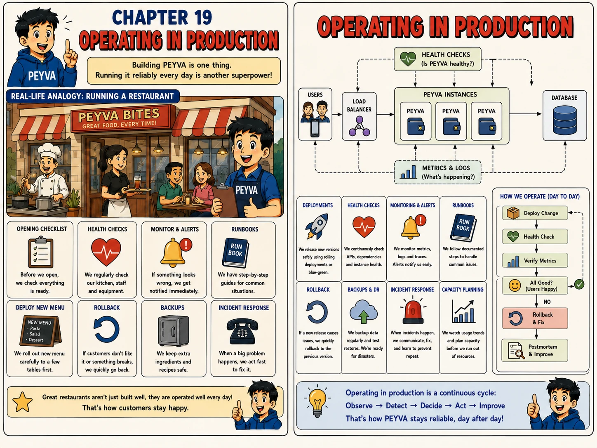

Chapter 19
Operating in Production
Building peyva is one thing. Running it reliably every day is another skill entirely.

1. Intuition
- Every chapter so far has been about building peyva.
- This one is about keeping it running: rolling out changes safely, noticing problems before users do.
- And having a plan for when it goes wrong anyway.
2. Concepts
- Health Check. An endpoint or process that continuously confirms peyva and its dependencies are actually working.
- Rolling Deployment. Releasing a new version gradually, instance by instance, instead of all at once.
- Rollback. Quickly reverting to the previous working version when a new release causes problems.
- Runbook. A step-by-step guide for handling a specific, known kind of incident.
3. Under the Hood
- Users -> Load Balancer -> peyva Instances -> Database, continuously watched by Health Checks and Metrics & Logs feeding back into the loop.
- Day to day: Deploy Change -> Health Check -> Verify Metrics -> All Good? Yes: done. No: Rollback & Fix, then Postmortem & Improve.
4. Build It Hands-on Building in Go, change in Chapter 0
- No new component. Give the system a deployment and rollback story.
Structured output formatting. A runbook read at 2am has to be commands, not prose. Hand over the exact skeleton you want back, and phrase it as what to produce rather than what to avoid, which is what actually steers the output.
Documented in Anthropic: Prompting best practices, Control the format of responses
Build this in Go, using its standard library.
Continue the same codebase you built in earlier chapters.
I run three copies of the Gateway and Teller behind a router, each exposing a health endpoint.
Add a version string, set at build time, reported by that endpoint. Then write me a rollback runbook.
Format the runbook exactly like this and nothing else:
## Symptom
One line: how I know I have this problem.
## Check
Numbered shell commands, one per line, with the output that confirms the diagnosis.
## Fix
Numbered shell commands, one per line, copy-pasteable, no placeholders I have to think about.
## Verify
One command and the exact output that means I'm recovered.
Every line under Check, Fix and Verify is either a command I can paste or an exact output I can compare against. It's 2am and I'm not making judgement calls.
Done when deploying a deliberately broken version to one copy fails its health check before the other two are touched, and the runbook's Fix section reverts it without improvisation.
5. Break It Test it
- Deploy a deliberately broken version and confirm your own process catches it.
- Deploy a version with an intentional bug to one instance first. Confirm its health check fails before it reaches every instance.
- Follow your own rollback runbook to revert that one instance: time how long it actually takes.
- Write a one-paragraph postmortem: what broke, how it was caught, what would prevent it next time.
Quick tip: Deploy to one instance first: a health check catching a bad release there is far cheaper than catching it everywhere.